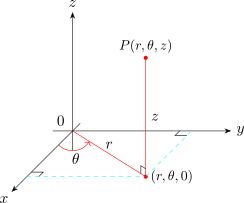
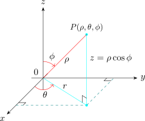

2.2 Cylindrical and Spherical Coordinates
In three dimensions there are two coordinate systems, besides the rectangular one, that give simple descriptions of commonly occurring surfaces and solids.
Cylindrical Coordinates
A point \(P\) is given the cylindrical coordinates \((r,\theta ,z)\), where \((r,\theta )\) are polar coordinates of its projection onto the \(xy\)-plane and \(z\) is its height.

To convert from cylindrical to rectangular coordinates, \[x = r\cos \theta ,\qquad y = r\sin \theta ,\qquad z =z ,\] and from rectangular to cylindrical, \[r^2 = x^2 + y^2 , \qquad \tan \theta = \frac {y}{x} ,\qquad z =z ,\] with \(\theta \) chosen in the quadrant of \((x,y)\). Cylindrical coordinates suit problems with symmetry about an axis, which is then taken as the \(z\)-axis: the cylinder of radius \(a\) about the \(z\)-axis is simply \(r = a\).
Solution. At each point \(z = r\geq 0\), and squaring gives \(z^2 = r^2 = x^2 + y^2\). So the surface is the part of the circular cone \(z^2 = x^2 + y^2\) with \(z\geq 0\): a cone with vertex at the origin, axis the \(z\)-axis, opening upward at \(45^\circ \) to the axis.
Example 2.2.2. Find an equation in cylindrical coordinates for the ellipsoid \(4x^2 + 4y^2 + z^2 =1\).
Solution. Since \(x^2 + y^2 = r^2\), \[4r^2 + z^2 =1,\qquad \text {or}\qquad z^2 = 1 - 4r^2 .\] The absence of \(\theta \) reflects the symmetry of the ellipsoid about the \(z\)-axis.
Spherical Coordinates
The spherical coordinates \((\rho , \theta , \phi )\) of a point \(P\) in space are shown below.

Here \(\rho = |OP|\) is the distance from the origin to \(P\), \(\theta \) is the same angle as in cylindrical coordinates, and \(\phi \) is the angle between the positive \(z\)-axis and the line segment \(OP\), with \[\rho \geq 0 , \qquad 0\leq \theta < 2\pi , \qquad 0 \leq \phi \leq \pi .\] The triangle formed by \(O\), \(P\) and the projection of \(P\) on the \(z\)-axis is right-angled, with hypotenuse \(\rho \) and angle \(\phi \) at \(O\), so \(z = \rho \cos \phi \) and the distance from the \(z\)-axis is \(r = \rho \sin \phi \). Combining with \(x = r\cos \theta \) and \(y = r\sin \theta \), \[x = \rho \sin \phi \cos \theta ,\qquad y =\rho \sin \phi \sin \theta ,\qquad z = \rho \cos \phi ,\qquad \rho ^2 = x^2 + y^2 + z^2 .\] The sphere of radius \(a\) about the origin is \(\rho = a\), the cone \(z^2 = x^2 + y^2\) with \(z\geq 0\) is \(\phi = \frac {\pi }{4}\), and the half-plane through the \(z\)-axis at angle \(\theta _0\) is \(\theta = \theta _0\).
Solution. Substituting, \[\rho ^2\sin ^2\phi \cos ^2 \theta - \rho ^2 \sin ^2\phi \sin ^2\theta - \rho ^2\cos ^2\phi = 1 .\] Since \(\cos ^2\theta - \sin ^2 \theta = \cos 2\theta \), \[\rho ^2\left (\sin ^2\phi \cos 2\theta - \cos ^2\phi \right ) =1 .\]
Example 2.2.4. Find a rectangular equation for the surface whose spherical equation is \(\rho = \sin \phi \sin \theta \).
Solution. Multiply by \(\rho \), so that the right side becomes a rectangular coordinate: \[\rho ^2 = \rho \sin \phi \sin \theta ,\qquad \text {that is}\qquad x^2 + y^2 + z^2 = y .\] Completing the square, \[x^2 + \left (y - \frac 12\right )^2 + z^2 = \frac {1}{4},\] the sphere with radius \(\frac {1}{2}\) and centre \(\left (0, \frac 12,0\right )\). (Multiplying by \(\rho \) adds only the origin, which already lies on the sphere.)
Example 2.2.5. The point \(\left ( 2, \frac {\pi }{4}, \frac {\pi }{3}\right )\) is given in spherical coordinates \((\rho ,\theta ,\phi )\). Find its rectangular coordinates.
Solution. \begin {align*} x & = \rho \sin \phi \cos \theta = 2 \sin \frac {\pi }{3}\cos \frac {\pi }{4} = 2\cdot \frac {\sqrt {3}}{2}\cdot \frac {1}{\sqrt {2}}=\sqrt {\frac {3}{2}},\\ y & = \rho \sin \phi \sin \theta = 2 \sin \frac {\pi }{3} \sin \frac {\pi }{4} = \sqrt {\frac {3}{2}},\\ z & = \rho \cos \phi = 2\cos \frac {\pi }{3} = 1 . \end {align*}
As a check, \(x^2 + y^2 + z^2 = \frac 32 + \frac 32 + 1 = 4 = \rho ^2\).
Exercise 2.2.6. Express the point \((0,2\sqrt {3},-2)\), given in rectangular coordinates, in spherical coordinates.
Answer: \(\rho = \sqrt {0 + 12 + 4} = 4\); \(\cos \phi = \frac {z}{\rho } = -\frac 12\), so \(\phi = \frac {2\pi }{3}\); and since \(x = 0\) and \(y>0\), \(\theta = \frac {\pi }{2}\). The point is \(\left (4, \frac {\pi }{2}, \frac {2\pi }{3}\right )\).
Example 2.2.7. Convert the cylindrical equation \(r^2 + z^2 = 4z\) to spherical coordinates and identify the surface.
Solution. Since \(r^2 + z^2 = \rho ^2\) and \(z = \rho \cos \phi \), the equation is \(\rho ^2 = 4\rho \cos \phi \), that is \(\rho = 4\cos \phi \) (together with the origin). In rectangular form it is \(x^2 + y^2 + (z-2)^2 = 4\), the sphere of radius \(2\) centred at \((0,0,2)\), which touches the \(xy\)-plane at the origin.
Questions on this section
Stuck on something here? Ask below and it stays attached to this topic.